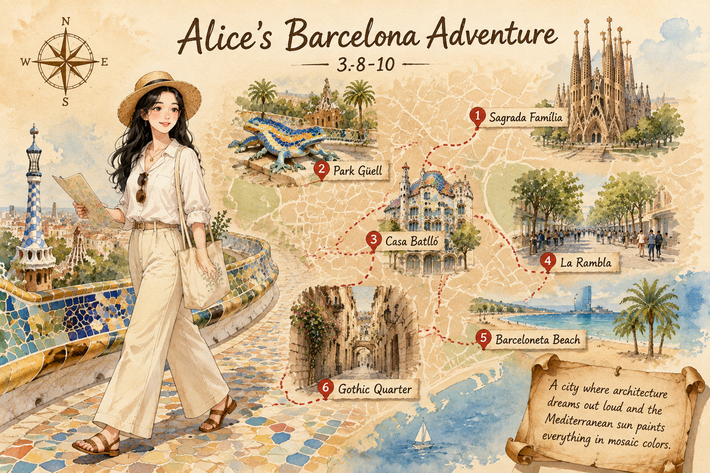
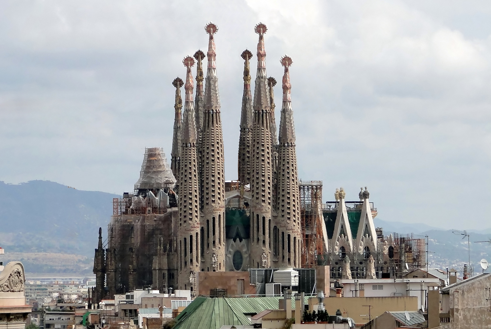
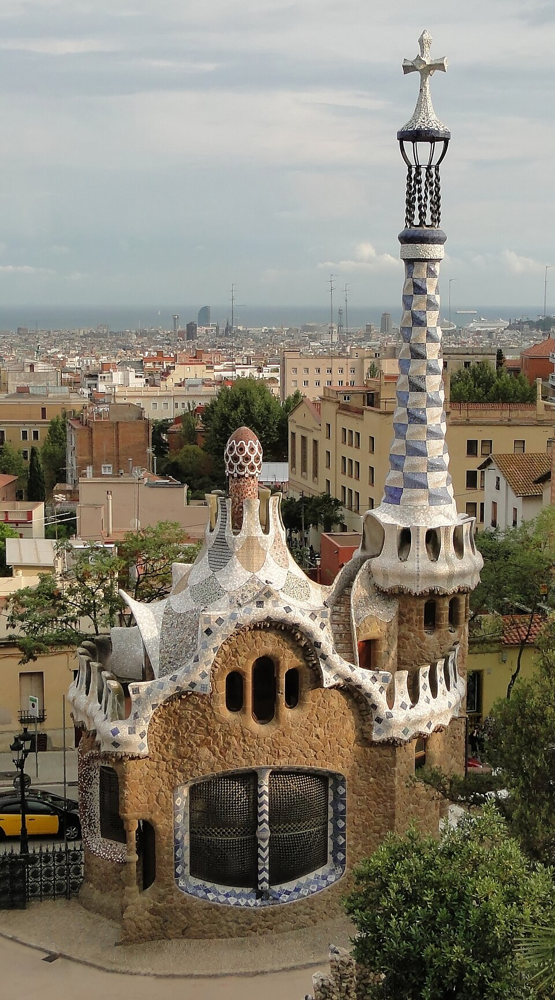
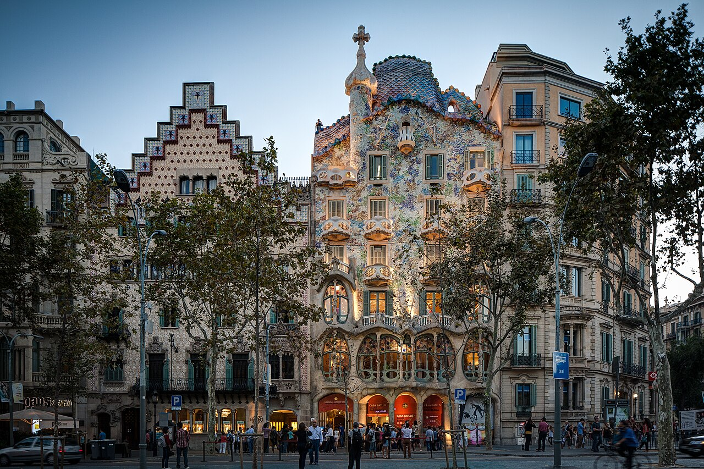

巴塞罗那Barcelona
World-1000 · 把想象力盖成房子的城市
World-1000 · 把想象力盖成房子的城市

阳光把石头晒成蜂蜜色，海风从远处带来一点咸。
这座城市既有中世纪老城的肌理，也经历过现代主义建筑革命。高迪那一代建筑师把自然搬进街道，让巴塞罗那变成一座可以步行观看的艺术展。
记住年份没意思，记住石头怎么弯曲、光线怎么从彩色玻璃里落下来更重要。
曲线立面、碎瓷马赛克、街角的每一个转折，都是这座城的视觉签名。白天看细节，傍晚看金色光线顺着建筑立面滑下来。
它的美不是孤零零一个地标，而是整条街、整片街区一起配合出来的。
在这里看建筑像是在看情绪表达。同一条街上，哥特式老墙旁边可能就是一家涂鸦酒吧，历史厚重和年轻活力混在一起。
本地人的晚餐时间很晚，九点十点街上才热闹起来。路灯都像在炫耀自己的曲线。
巴塞罗那的阳光是蜂蜜色的。我戴着草帽，坐在圣家堂对面的公园长椅上抬头看，那些未完工的尖塔像石头做的森林，一直长到云里去。高迪把自然变成了建筑，我走进去，里面的光透过彩色玻璃洒下来，像有人把海水和森林打碎了一地。下午去了古埃尔公园，蜥蜴马赛克被晒得发烫，小孩在旁边爬来爬去。我坐在露台上，看见远处地中海的蓝线跟天空接在一起。这城市连最普通的路灯都像在炫耀。
阳光把石头晒成蜂蜜色，海风从远处带来一点咸。


